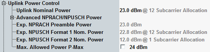

This section describes the parameters at the highest level of the "Uplink Power Control" node.

Defines a nominal power value for the UL, applicable if the indicated subcarrier allocation is used. The indicated subcarrier allocation is the maximum allocation allowed for the configured subcarrier spacing.
If the UE transmits an NPUSCH with this subcarrier allocation, the expected transmit power equals the configured value.
The parameter is part of the basic UL power settings. It is only relevant and configurable if the "Advanced NPRACH/NPUSCH Power" settings are disabled. The power values sent to the UE are calculated from the "Uplink Nominal Power" and are displayed in the node "Advanced NPRACH and NPUSCH Power".
Remote command:Displays the expected power of the first preamble.
The value depends on the "preambleInitialReceivedTargetPower" ("Preamble Initial Received Target Power") and on the pathloss. For details, see 3GPP TS 36.321 section 5.1.
Maximum UE TX power limitations, for example due to the UE category, are not considered.
Remote command:Displays the expected NPUSCH power, for the NPUSCH formats 1 and 2, according to 3GPP TS 36.213, section 16.2.1.1.1. The calculation does not consider maximum UE TX power limitations, for example, due to the UE category.
Most of the advanced power settings influence this value.
You can use the displayed values to verify your configuration: With a correct configuration, the expected NPRACH power and the expected NPUSCH format 1 power are close together. Otherwise, the NPRACH cannot be detected and the attach procedure fails.
Remote command:Specifies the maximum allowed output power for the UE in the cell. The UE output power must not exceed this value.
If the checkbox is enabled, the configured value is signaled to the UE within the system information. If it is disabled, the parameter has no effect.
Remote command: